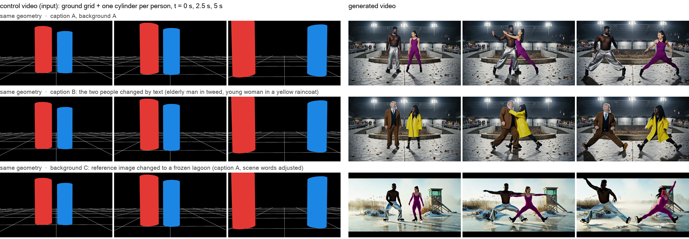
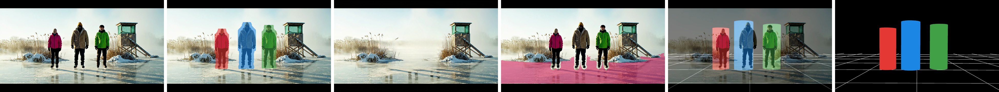
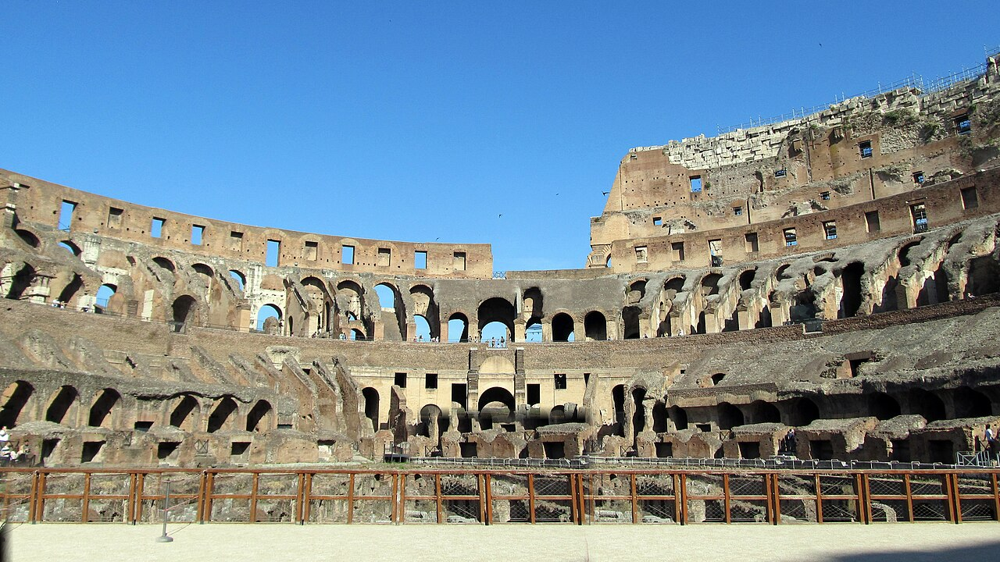
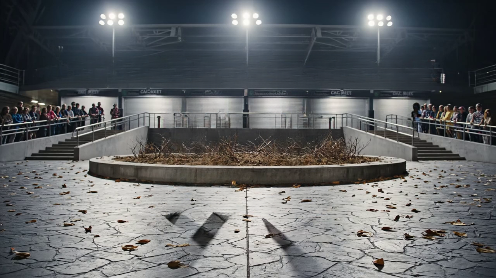
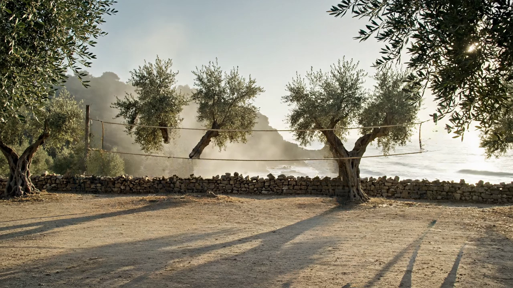
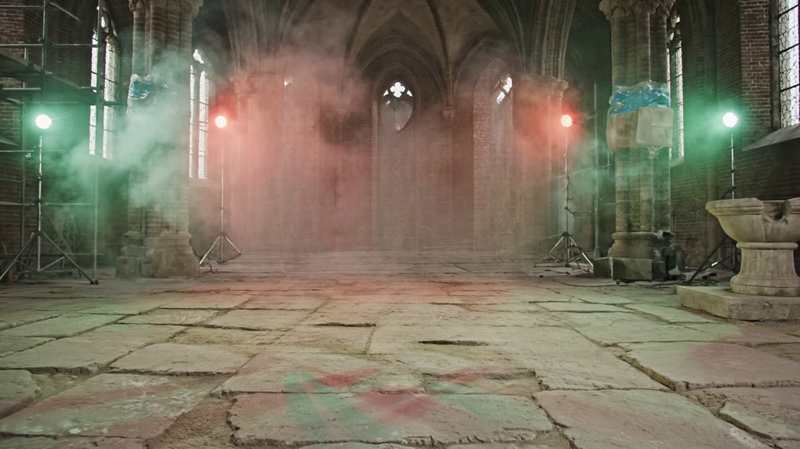
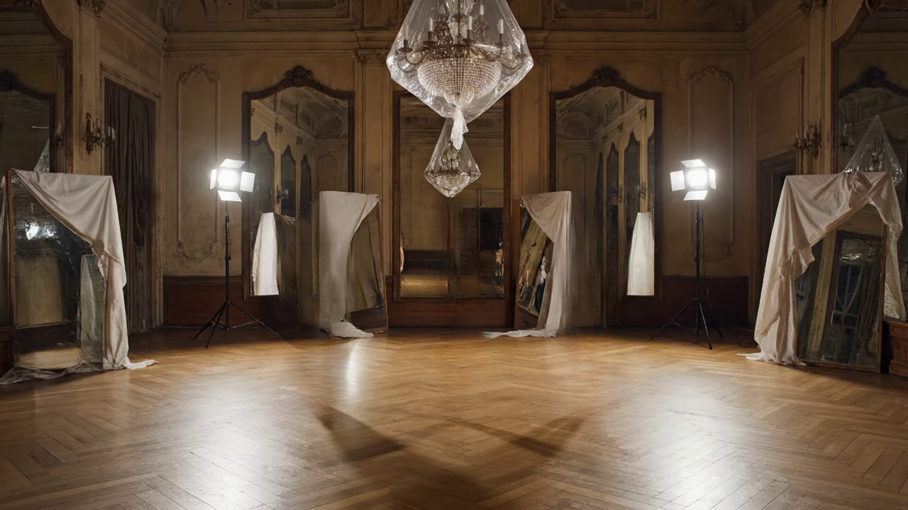
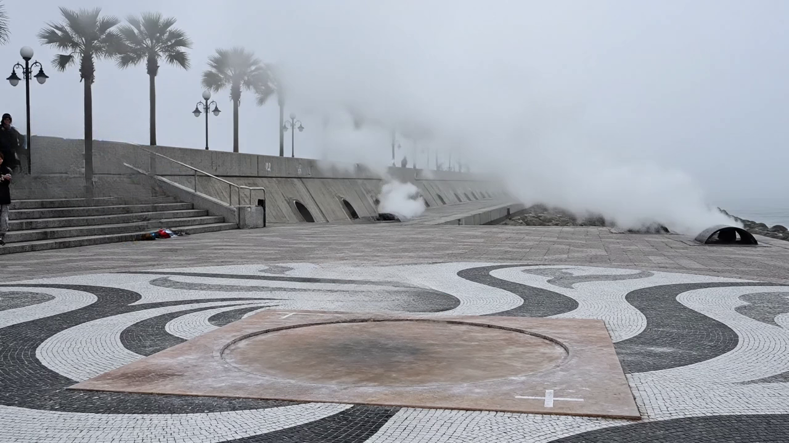

CoaG: Cylinders on a Grid
Coarse 3D layout control for video generation
Zhangsihao Yang · research preview, September 2026
Paper (draft PDF)Code + editorLoRA weightsData
A user draws the crudest possible 3D scene, a ground grid and one cylinder per person, and moves the cylinders and the camera over 81 frames. A LoRA on Wan2.2-Fun-Control turns that sketch into a photoreal video in which the people stand where the cylinders stand, move as the cylinders move, and the camera moves as the drawn camera moves. Appearance comes from the text and a background reference image; layout and motion come from the geometry. The training pairs come from an automatic engine that lifts text-to-video output back to its geometry, with no real footage and no manual labels.

Left: the control video (three of 81 frames). Right: generated videos. The rows share the geometry and differ only in the text (row 2) or the background reference image (row 3).
How the training pairs are made

One clip through the data engine: input frame, person masks (SAM 3.1), background (LaMa), ground mask (agent loop over SAM 3 phrases), plane and cylinders (HunyuanWorld-Mirror cameras and points, RANSAC plane), control frame.
Hand-authored geometry, never seen in training
Control videos drawn in the editor (top view, Bézier paths, camera presets) and rendered with the same renderer as the training data.
Two Roman soldiers fight in the Colosseum: same authored duel under four camera paths (background: a Wikimedia Commons photo, CC BY-SA 2.0 daryl_mitchell, tourists patched out). Orbit.

Same duel, crane.
Two people swap places along curved paths under an orbiting camera (stadium plaza background of hold-out c0599).

Four people of different heights in a row, dolly in (olive grove background of hold-out c0999).

Unseen scenes: the background reference image comes from a different hold-out clip
Geometry of one hold-out clip, background of another; the model saw neither.
Two dancers (c0599 geometry) in a deconsecrated cathedral (reference of c0249).

Two dancers in a faded Moscow ballroom (reference of c1699).

Three skaters (c0899 geometry) on a foggy Tokyo promenade (reference of c1549).

Unseen actions: prompts outside the 118 training action families
Same geometry and background as the baselines, only the action in the text changed.
Slow tai chi in unison.

Walking briskly and chatting.

Baselines on hold-out clips
Own caption, own background, the control video recovered from the clip; the original Veo clip for reference.
c0599: two dancers on a stadium plaza.
c0899: three skaters on a frozen lagoon.
Change the people (text only)
Same control video and background as the baseline.
c0599: elderly Scottish man in tweed + young Nigerian woman in a yellow raincoat.
c0899: Norwegian man in a red sweater, Korean woman in a black puffer and white helmet, Mexican man in a blue tracksuit.
Change the background (reference image)
Same control video; the reference image and the scene words swapped between the two clips.
c0599 dancers on the frozen lagoon.

c0899 skaters on the stadium plaza.

Change the camera (authored paths on the recovered geometry)
Same cylinders, caption and reference image; the camera path re-rendered.
c0599: static.
c0599: dolly in.
c0599: dolly out.
c0599: orbit.
c0599: pan.
c0599: crane.
c0899: orbit.
c0899: dolly in.
All videos: 480 x 832, 81 frames at 16 fps, 50 sampling steps, LoRA weight 0.55 on both experts, one fixed seed, no cherry-picking within a case. Videos loop; hover to see the controls.
Data and weights
LoRA weights (both experts): Hugging Face, link above. Captions and seed cards: in the code repository. Raw Veo clips, 81-frame clips, control videos and background images: Google Drive, link to be added. Colosseum background: "Colosseum Interior 1" by daryl_mitchell, CC BY-SA 2.0, via Wikimedia Commons (cropped, tourists patched out).